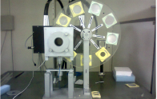
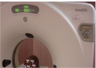

Levantamento radiométrico
Medida dos níveis de radiação no ambiente de trabalho com monitores de radiação, para garantir que as condições são adequadas do ponto de vista da proteção radiológica.
Levantamento radiométrico, controle de qualidade em radiodiagnóstico, cálculo de blindagem e planos de proteção radiológica para hospitais, clínicas e indústrias de todo o país, em especial do Norte e do Nordeste.
Consultoria em proteção radiológica nas áreas médica e industrial, do levantamento à formação das equipes.
Medida dos níveis de radiação no ambiente de trabalho com monitores de radiação, para garantir que as condições são adequadas do ponto de vista da proteção radiológica.

Testes de controle de qualidade de equipamentos de raios X diagnóstico, tomógrafos, mamógrafos e de radiologia odontológica, conforme a Portaria 453 do Ministério da Saúde.

Avalia as condições das fontes de radiação seladas, verificando se há vazamento de material radioativo.

Elaboração de planos de proteção radiológica para indústrias, hospitais e clínicas, em atendimento aos requisitos da CNEN e da Vigilância Sanitária.

Cálculo das barreiras de proteção de salas e instalações médicas e industriais que usam radiação ionizante.

Cursos de proteção radiológica para técnicos e profissionais, e preparação para o exame de supervisor de proteção radiológica da CNEN.
Tipo de equipamento, uso da sala e a exigência que precisa atender (CNEN ou Vigilância Sanitária).
A equipe mede a taxa de dose nos pontos ao redor da sala, com o equipamento em operação.
Você recebe os resultados das medidas e as orientações de proteção radiológica para a instalação.